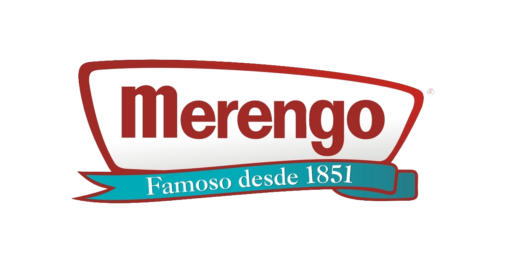
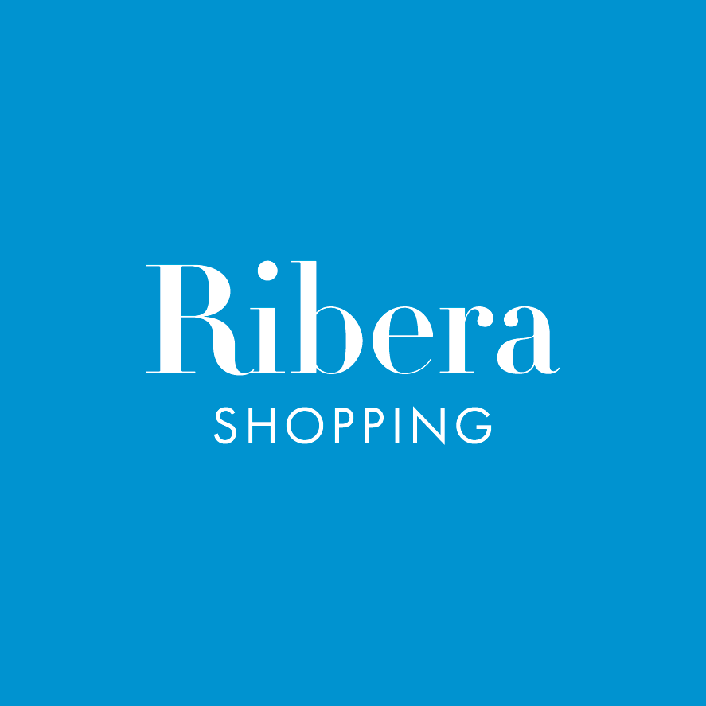

Sponsors
Niveles de auspicio
| Nivel | Beneficios | Ejemplos |
|---|---|---|
| Principal | Logo en escenario, prensa y portada web | Bebidas, Medios, Institucionales |
| Oficial | Logo en piezas digitales y señalética | Gastronomía, Tecnología, Movilidad |
| Colaborador | Logo en web y tótems del predio | Comercios locales |
| Media Partner | Menciones y coberturas | Radios, Portales, TV |
¿Querés sumar tu marca? Escribinos con el asunto “Auspicio Festival Puente”.
Quiero auspiciarMarcas santafesinas confirmadas
| Marca | Categoría | Enlace |
|---|---|---|
| Cerveza Santa Fe | Bebidas | paseodelacerveceria.com.ar |
| La Chopería | Gastronomía | facebook.com/choperiasantafe |
| Merengo | Dulces / Tradición | alfajoresmerengo.com |
| El Litoral | Media Partner | ellitoral.com |
| Municipalidad de Santa Fe | Institucional | santafeciudad.gov.ar |
| Shopping La Ribera | Comercial | riberashopping.com.ar |
 |
 |
 |
 |

|
 |